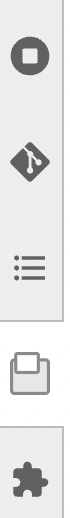

Browse a database
In this tutorial, you connect a small database to Metanno and browse its tables from the JupyterLab sidebar, without writing a query. The same steps work with your own database, whether it is a DuckDB file, PostgreSQL, Spark or Trino.
Before you start
Follow Installation, including the metanno-explorer kernel. From now on, create the notebooks of these tutorials at the root of the JupyterLab file browser, where Metanno keeps its configuration and your views in a metanno-home folder. This tutorial uses DuckDB, install its driver in the same environment:
pip install 'ibis-framework[duckdb]'
Create a sample database
Run this cell in a notebook. It writes a few clinical notes to clinic.duckdb, next to the notebook, in French like the notes EDS-NLP pre-annotates in a later tutorial:
from pathlib import Path
import duckdb
import pandas as pd
rows = [
(1, 10, "oncologie", "2026-01-05", "Cancer du sein, stade pT2N0M0."),
(2, 10, "oncologie", "2026-02-10", "Pas de complication."),
(3, 11, "cardiologie", "2026-01-20", "Fibrillation atriale."),
(4, 12, "oncologie", "2026-03-02", "Tumeur cT3N1M0, pas de métastase."),
(5, 12, "radiologie", "2026-03-15", "Mammographie sans lésion."),
(6, 13, "cardiologie", "2026-04-01", "Insuffisance cardiaque."),
]
columns = ["note_id", "patient_id", "department", "note_date", "text"]
notes = pd.DataFrame(rows, columns=columns)
notes["note_date"] = pd.to_datetime(notes["note_date"])
path = Path("clinic.duckdb").resolve()
with duckdb.connect(str(path)) as connection:
connection.register("new_notes", notes)
connection.execute("CREATE OR REPLACE TABLE notes AS SELECT * FROM new_notes")
print(path)
Keep the printed path, you need it in the next step.
Tell Metanno where it is

Click the Metanno icon in the left sidebar of JupyterLab, the two overlapping windows shown on the right. The panel is empty for now: Metanno only lists the sources declared in its configuration file.
Click the settings button at the top of the panel. It shows the metanno-home folder in the file browser and opens its metanno.yaml in an editor, both created at the root of the file browser the first time. Replace its content with the following, using the path printed above:
connections:
clinic:
url: duckdb:///home/you/clinic.duckdb
sources:
clinic:
connection: clinic
Save the file, click the Metanno icon again, then click the reload button next to the settings button.
connections says how to reach a database, and sources lists what the panel shows. Here a single source uses the clinic connection, but a connection can serve several sources, for instance one per schema of the same database.
Explore a table
Under Explore, a clinic source now appears. Expand it and click notes: the table opens in a tab, with the selected note on the right like in Annotate a table.
This tab reads the database directly, without copying it. To keep things fast on large tables, it shows a preview of at most 500 rows, in no particular order, and edits are disabled since they would change your database.
The boxes under the column headers filter the rows of this preview only. To search the whole table, type your filters in these boxes, then click above the table: Metanno sends them to the database and shows the matching rows. For instance, type oncologie under department and apply it to the source.
What else is in the tab toolbar?
| Button | What it does |
|---|---|
| View menu | Shows the same rows with another view, table or one of your own |
| Writes notebook code for the current query, the next tutorial uses it | |
| Reloads the table, after the database changed or its connection failed | |
| Fullscreen | Fills the browser tab with the view, its URL reopens the same table |
Right-click a table in the panel and choose Open in new tab to keep the current tab.
What the panel lists
The panel has two parts:
- Explore lists your sources and their tables, and the saved views you will create in Design your view
- Annotations lists the files saved in the
annotationsfolder, next tometanno.yaml, such as the ones you will create in the next tutorial. Click one to reopen it, without opening its notebook
metanno-home/
metanno.yaml connections and sources
views/ your views (*.py) and saved views (*.yml)
annotations/ annotation files (*.pret)
Other kinds of sources
Besides the tables of a database, a source can list the Parquet or Delta datasets of a folder, or the tables of one schema of a larger database. A connection can also be opened by your own Python function, for instance to read credentials:
connections:
warehouse:
factory: project_connections:connect
kwargs:
database: /data/warehouse.duckdb
sources:
oncology:
connection: warehouse
database: oncology
exports:
connection: warehouse
kind: files
format: parquet
uri: /data/exports
preview:
rows: 1000
cataloganddatabaseselect the catalogue and the database, or schema, holding the tables of a sourcekind: filesshows the folders underuriwith their Parquet or Delta datasets as tables.uriis a local or mounted folder, or a remote one such ashdfs://,s3a://orgs://listed by a Spark connection or a connection with alist_storage(uri)method. A folder holding data files and no subfolder is one dataset, for instance a folder ofpart-*.parquetfiles, also when it isuriitself, and next to subfolders a.parquetfile is a table of its own.formatcan be left out: a dataset is Delta when its folder has a_delta_logfactorynames a function, hereconnectin aproject_connections.pyfile next tometanno.yaml, which returns an Ibis connection or a context manager giving one, and receives thekwargs- a factory connection whose
table()lists the table files at each call, for instance the current files of a Delta table, can setrefresh_tables_on_view_open = Trueon the connection it returns: Metanno then callstable()again each time a tab opens, so the tab sees the files written since the previous one preview.rowschanges the 500 rows shown by source tabsdefault_connectionnames the connection that reads a dataset opened by its location outside the sources, as in the next note
from contextlib import contextmanager
import ibis
@contextmanager
def connect(database):
backend = ibis.duckdb.connect(database)
try:
yield backend
finally:
backend.disconnect()
Connections open the first time one of their tables is shown. Install the Ibis driver of each one, such as ibis-framework[postgres], in the environment of the metanno-explorer kernel.
Open a dataset from another JupyterLab extension
An extension, for instance a file browser of HDFS, opens a dataset in a Metanno tab with the metanno-viewer:open-resource command, without depending on Metanno:
if (app.commands.hasCommand("metanno-viewer:open-resource"))
await app.commands.execute("metanno-viewer:open-resource", {
resource: { kind: "path", uri: "hdfs:///user/you/runs/notes" },
});
The dataset opens as a table of the deepest kind: files source whose uri contains it, here runs/notes of a source on hdfs:///user/you, so its tab is the one the sidebar opens. Outside the sources, its folder becomes a source read with default_connection. connection picks another connection, for instance { kind: "path", uri, connection: "spark" }, and { kind: "table", source, table } opens a table of a source by its names.
Next
You found the notes you want to work on: Pick documents turns a query into an annotation file.